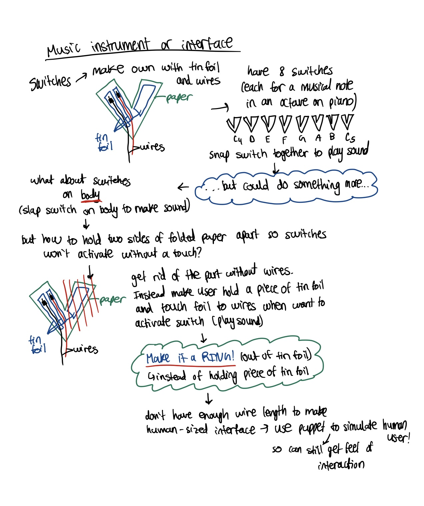
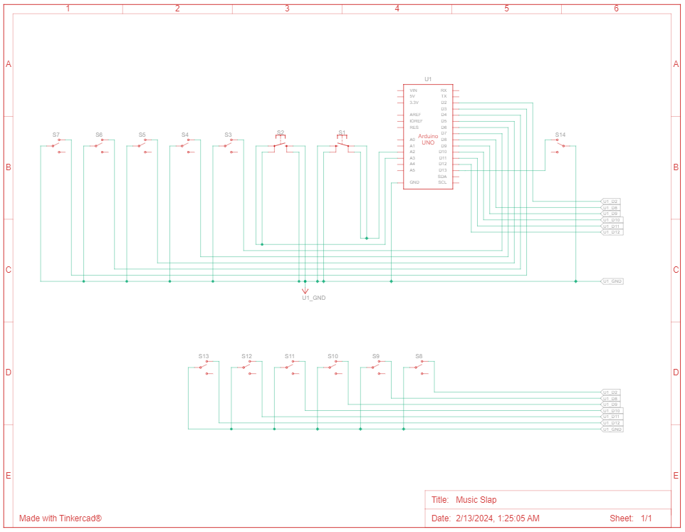

System Documentation
Music Slap
Music Slap is an expressive, wearable musical interface designed to turn the human body into a dynamic instrument. Built for fluid performance, this wearable device liberates creators from traditional studio constraints, allowing anyone to compose and perform music entirely on the go.
1. Overview and Concept
Traditional musical instruments and digital controllers often demand rigid postures, tying the performer to a desk, stand, or specific physical stance. Music Slap was developed to challenge these physical limitations. By centering the overall experience of the performer, the interface explores how assistive and wearable technology can make digital music creation more intuitive, accessible, and deeply personal.
This project sits at the intersection of human-computer interaction (HCI), wearable electronics, and product design. By prioritizing ergonomic adaptability, Music Slap expands the boundaries of electronic music performance, making it highly accessible for traditional musicians, physical performers, and users with diverse mobility needs alike.
2. Architecture Development
Multiple pads (switches), each encoded to a musical note in the C4 octave, are attached to a shirt that can be worn by a human user as well as rings made out of aluminium foil are worn on both hands of the user. Tapping an aluminium ring to a pad on the shirt will produce a sound (from the computer using the serial port) of the corresponding musical note. Each pad is labelled with the musical note it corresponds to. As well, both sharps and flats are present in our musical interface!
Music Slap can also switch between different octaves by toggling the two pushbuttons:
- If the pushbutton closer to the user is pressed (in the image and demo video below, this would mean the button closer to the puppet), then all the musical notes in the interface decrease to an octave lower than the current octave setting
- If the pushbutton further away from the user is pressed (in the image and demo video below, this would mean the button further away from the puppet), then all the musical notes in the interface increase to an octave higher than the current octave setting
The interface establishes a seamless data pipeline by splitting duties between local hardware sensing and host-side audio computation. The Arduino firmware handles real-time user input detection and, the exact instant a conductive pad on the shirt is touched by the aluminium ring, it immediately broadcasts a data package over a dedicated USB serial port. Concurrently, a host-side Python script relies on the serial module to actively listen to this inbound Virtual COM port stream. Executing the Python application alongside the active microcontroller creates a highly responsive communication loop where incoming serial triggers are instantaneously processed, commanding the pygame.mixer framework to generate and emit the corresponding musical note directly through the computer's audio system.
The image below showcases the final artifact:
The natural music notes are represented with squares in the interface and are on the red part of the shirt, whereas the sharp and flat music notes are presented in rectangles on the yellow belt.
Note: Due to the limited amount of wiring available, a human-sized interface was not feasible to produce. Hence, a puppet was used to represent the human user in this image and in the demo video showcased later. This puppet allows to get a feel of the interaction.

The following image displays the concept development that took place for this project.

3. Hardware Logic
The system is powered by an Arduino Uno that handles real-time data processing and signal routing from a series of custom-built tactile switches strategically positioned across the wearable interface for maximum ergonomic accessibility. To ensure reliable performance during intense physical movement, individual switch inputs are wired directly to separate digital pins. This configuration provides distinct electrical isolation and zero-latency hardware debouncing, guaranteeing crisp, reliable note triggering regardless of the performer's body position.
Circuit Schematic Diagram:

4. Core Firmware Implementation
The system runs on a lightweight embedded C/C++ firmware architecture that continuously polls the digital input pins to deliver a highly responsive experience. Within the main execution loop, efficient state change detection logic tracks user inputs and immediately broadcasts performance data over a serial connection. To handle audio generation, a custom Python wrapper monitors this serial bus in real time, capturing data on which note was triggered and instantly playing the corresponding high-quality audio file using the pygame.mixer library. This optimized software pipeline eliminates perceptible latency, allowing performers to effortlessly trigger complex melodic arrangements through intuitive body movements.